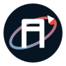

Ошибка 404Маршрут
не найден
Такой страницы нет или её адрес изменился. Вернитесь на главную и продолжите знакомство с концептом.
Вернуться на главную →
Ошибка 404Такой страницы нет или её адрес изменился. Вернитесь на главную и продолжите знакомство с концептом.
Вернуться на главную →